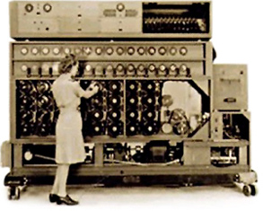

Die britische Regierung richtet ein Forschungszentrum in Bletchley Park ein, um die Geheim-Chiffre der Deutschen zu knacken. Tom Flowers baute in 10 Monaten "Colossus". Im Dezember 1943 war sie mit ihren 1500 Röhren betriebsbereit. Der erste Einsatz des 6 Meter langen und 2,5 Meter hohen Rechners war im Februar 1944. Der Rechner wird heute als erster elektronischer Digitalcomputer angesehen. Nach Kriegsende ließ ihn Winston Churchill zerstören und alle Unterlagen vernichten, da niemand von den Dechiffriererfolgen der Alliierten erfahren sollte. In den USA nahm Howard A. Aiken an der Harvard University den von ihm konstruierten ersten programmgesteuerten Rechenautomaten in Betrieb, "Mark I". Er war 16m lang, 2,5m hoch und 35t schwer, und wurde von der US Navy für ballistische Berechnungen genutzt.